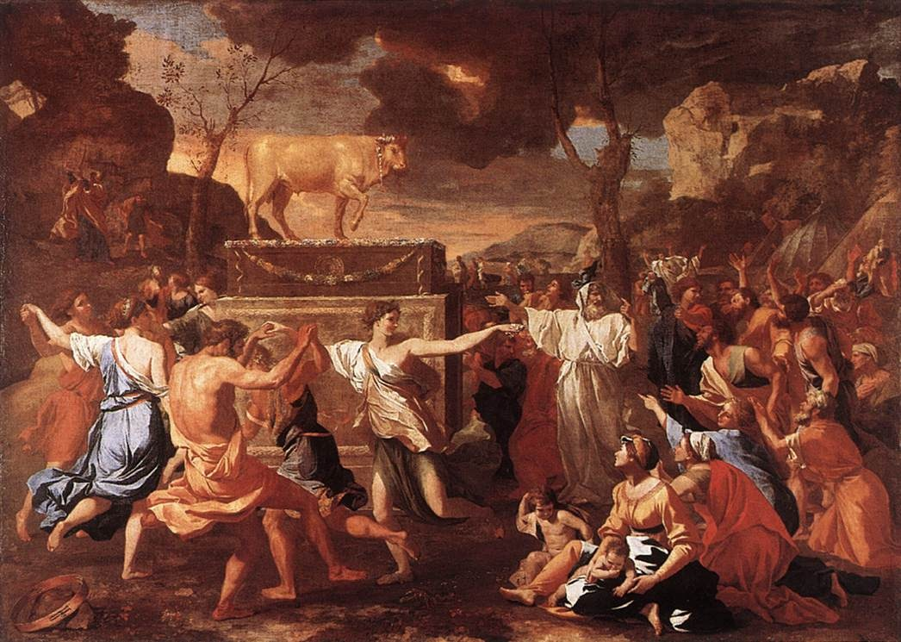

1 Corintios 10 — La Traducción Mister

La cita de Pablo en el versículo 7 es de Éxodo 32:6: el pueblo se sentó a comer y beber, y se levantó a divertirse. Esta es esa fiesta, pintada como un baile alrededor del becerro. El cuadro muestra el banquete que nombra el versículo, la idolatría de la primera advertencia, y no la inmoralidad sexual ni la murmuración que siguen en los versículos 8 y 10.

“Nuestros padres estuvieron todos bajo la nube.” Hoi patēres hēmōn pantes hypo tēn nephelēn ēsan, nuestros padres estuvieron todos bajo la nube. Pablo llama nuestros padres a la generación del éxodo, y así los corintios, en su mayoría gentiles, quedan herederos de esa historia. La frase no quiero que ignoren (ou thelō hymas agnoein) vuelve en 12:1, ya en estas páginas. En las versiones, la TNM 1987 “no quiero que ignoren, hermanos, que nuestros antepasados todos estuvieron bajo la nube y todos pasaron por el mar,” y la TNM 2019 “quiero que sepan que nuestros antepasados estuvieron todos bajo la nube, todos atravesaron el mar,”. La traducción sigue el orden griego.
“Bautizados en Moisés.” eis ton Mōysēn ebaptisanto. La preposición es eis, hacia dentro de, y no el en con el que Pablo habla de la nube y del mar en el mismo versículo. Los israelitas quedan puestos bajo la dirección de Moisés por el cruce. En las versiones, la TNM 2019 “todos fueron bautizados en Moisés mediante la nube y el mar,” y la TNM 1987 “todos fueron bautizados en Moisés por medio de la nube y del mar;”. La traducción dice «en Moisés» porque el griego tiene eis.
“El mismo alimento y la misma bebida espirituales.” pneumatikon brōma y pneumatikon pōma. El adjetivo pneumatikos es la palabra de Pablo para lo que pertenece al Espíritu, la de 2:15, donde el hombre espiritual juzga todas las cosas. El maná y el agua se llaman espirituales porque Dios los dio, y la frase no dice que fueran otra clase de alimento. En las versiones, la TNM 2019 “todos comieron el mismo alimento espiritual” y “todos bebieron la misma bebida espiritual”, con la misma forma en la TNM 1987.
“La roca que los seguía, y la roca era Cristo.” ek pneumatikēs akolouthousēs petras, hē petra de ēn ho Christos. Éxodo 17:6 y Números 20:11 describen una roca golpeada para sacar agua. Números 21:16–20 describe un pozo. Ninguno dice que la roca viajara con el campamento; la frase la roca que los seguía es lectura propia de Pablo, y la nota es suya. El verbo es ēn, era, y la traducción lo conserva. En las versiones, la TNM 2019 “aquella roca representaba al Cristo,” que cambia era por representaba, y la TNM 1987 “aquella masa rocosa significaba el Cristo.” La lectura de la TNM es una interpretación del verbo, no una traducción de él. La palabra griega es petra, una roca o peñasco.
“Dios no se agradó de la mayoría.” eudokēsen ho theos, Dios se agradó, aquí en negativo. El verbo es el de buena voluntad. La frase siguiente, quedaron tendidos en el desierto (katestrōthēsan, derribados como los muertos en un campo), se refiere a las muertes registradas en Números 14:29 y a los cuarenta años de peregrinación. En las versiones, la TNM 1987 “Dios no expresó su aprobación, pues quedaron tendidos en el desierto,” y la TNM 2019 “la mayoría de ellos no agradó a Dios, pues cayeron muertos en el desierto.” La TNM 2019 dice «cayeron muertos» donde el griego dice tendidos, y la traducción sigue la imagen del campo.
“Estas cosas nos sirvieron de ejemplo.” Tauta de tupoi hēmōn egenēthēsan, estas cosas llegaron a ser modelos nuestros. La palabra tupos es la de una marca dejada por un golpe, un modelo o un patrón (typos). Los israelitas son un modelo que los corintios deben leer como advertencia, no como señal de que ya están a salvo. Para que no codiciemos cosas malas: el verbo epithymeō es el de desear con fuerza, la misma raíz con la que Pablo describe a los israelitas en el versículo; ellos codiciaron, y a los corintios se les dice que no codicien lo mismo. En las versiones, la TNM 2019 “estas cosas nos sirven de ejemplo para que no deseemos cosas perjudiciales, como hicieron ellos,” y la TNM 1987 “estas cosas llegaron a ser nuestros ejemplos, para que nosotros no seamos personas que deseen cosas perjudiciales, tal como ellos las desearon.”
“No se hagan idólatras.” mēde eidōlolatrai ginesthe. La palabra se forma con eidōlon, la imagen o ídolo (eidōlon), y latris, adorador. En 8:4 el ídolo no es nada; aquí, para quien se sienta a su banquete, el ídolo se ha vuelto algo real.
“Se sentó el pueblo a comer y beber, y se levantó a divertirse.” La cita es Ekathisen ho laos phagein kai piein, kai anestēsan paizein, de Éxodo 32:6, donde el pueblo se sienta a comer y beber ante el becerro de oro y se levanta a divertirse. El verbo paizō significa jugar, bailar o entregarse al festejo; el griego de Éxodo es el de los Setenta, y Pablo lo cita palabra por palabra. En las versiones, la TNM 1987 “«Se sentó el pueblo a comer y beber, y se levantaron para divertirse»,” y la TNM 2019 “«El pueblo se sentó a comer y beber, y luego se levantaron para divertirse».” La traducción conserva «divertirse» porque la palabra es juego, no solo pasarla bien.
“Ni cometamos inmoralidad sexual.” mēde porneuōmen, no cometamos fornicación. El verbo es la raíz de porneia, la palabra para la inmoralidad sexual en general, y la frase apunta al episodio de Sitim en Números 25:1–9, donde el pueblo fornica con las hijas de Moab.
“Cayeron veintitrés mil en un solo día.” kai ephesan mia hēmera eikosi treis chiliades. El hebreo de Números 25:9 dice veinticuatro mil (arbaʿah wĕʿeśrîm ʾelep), y Pablo dice veintitrés mil. La diferencia es real, y la nota la registra sin resolverla. En las versiones, la TNM 1987 “veintitrés mil [de ellos] en un día,” y la TNM 2019 “23.000 de ellos en un solo día.” La traducción conserva el número tal como lo escribe Pablo.
“Ni pongamos a prueba al Cristo.” mēde ekpeirazōmen ton Christon. El verbo ekpeirazō es una forma reforzada de peirazō, probar o tentar. El texto crítico imprime al Cristo, y algunos testigos antiguos leen al Señor, lo que haría que la frase concordara con los Setenta de Números 21:5–6, donde la queja es contra Dios y Moisés. La nota registra las dos lecturas; la traducción conserva el texto impreso.
“Murieron por las serpientes.” hypo tōn ophewn apōllyanto. Las serpientes de Números 21:6 se envían después de que el pueblo habla contra Dios, contra Moisés y contra el alimento. El verbo apollymi, destruir, es el mismo que describe a los muertos en el versículo 5. En las versiones, la TNM 1987 “Ni pongamos a Jehová a prueba, como algunos de ellos [lo] pusieron a prueba, de modo que perecieron por las serpientes.” La TNM imprime «Jehová» donde el texto crítico lee Cristo; la traducción sigue el griego y lo dice aquí.
“Ni murmuren.” mēde gongyzete, no murmuren. El verbo es el de la queja en voz baja, la murmuración del campamento. El pueblo murmura en Números 14:2 y en Números 17:6 (16:41 en el hebreo), y el destructor llega en Números 17:11–14 (16:46–49 en el hebreo).
“El destructor.” hypo tou olothreutou, por el destructor. El sustantivo olothreutēs es un título para el agente de la muerte, el verbo del destructor de Éxodo 12:23 y de la plaga después de Coré. Pablo no lo nombra. En las versiones, la TNM 2019 “Tampoco seamos quejumbrosos, como algunos de ellos que se quejaron y luego murieron a causa del destructor,” y la TNM 1987 “Ni seamos murmuradores, así como algunos de ellos murmuraron, de modo que perecieron por el destructor.”
“Como ejemplos, y escritas como advertencia.” tupikōs synebainen ekeinois, estas cosas les sucedieron como modelos, y egraphē pros nouthesian hēmōn, fueron escritas para nuestra amonestación. El sustantivo nouthesia es la instrucción que corrige, del verbo noutheteō que Pablo usa de sus hijos en 4:14. Los israelitas son el texto anterior, y los corintios el posterior.
“Sobre quienes han llegado los fines de los siglos.” eis hous ta telē tōn aiōnōn katēntēken. El griego dice que los fines de los siglos han llegado sobre nosotros, y el verbo katantaō es el de una llegada. La frase dice que el fin ya está presente para los corintios. En las versiones, la TNM 2019 “para quienes ha llegado el fin de los sistemas,” y la TNM 1987 “a quienes los fines de los sistemas de cosas han llegado.” La traducción dice «siglos» para aiōnes, y no «sistemas», que es la lectura de la TNM.
“El que piensa que está firme.” ho dokōn hestanai blepetō mē pesē. El verbo dokeō significa pensar o parecer, y Pablo no dice que el hombre esté firme. La advertencia va a quien solo parece estar de pie. En las versiones, la TNM 1987 “el que piensa que está en pie, cuídese de no caer,” y la TNM 2019 “el que piensa que está de pie, que tenga cuidado de no caer.”
“No les ha sobrevenido ninguna tentación que no sea humana.” peirasmos hymas ouk eilēphen ei mē anthrōpinos. La palabra peirasmos puede significar prueba o tentación, y el versículo conserva ambos sentidos. El adjetivo anthrōpinos es el de lo humano; la prueba es una que la gente comparte. La salida (ekbasis) es la vía de escape, y Dios la da junto con la prueba, no después. En las versiones, la TNM 1987 “Ninguna tentación los ha tomado a ustedes salvo lo que es común a los hombres,” y la TNM 2019 “A ustedes no se les ha presentado ninguna tentación que no sea común a todas las personas.”
“Huyan de la idolatría.” phygete apo tēs eidōlolatrias, huyan de la idolatría. El verbo es el de huir, el mismo que en 6:18 para huir de la fornicación. El mandato no es una norma sobre la carne; es la conclusión de todo el argumento, y va dirigido a los amados.
“Hablo como a personas sensatas.” hōs phronimois legō, hablo como a personas de juicio. El adjetivo phronimos es el de 4:10, donde Pablo dice que los corintios son sabios en Cristo. La frase invita al lector a decidir por sí mismo, y el verbo krinate es el de juzgar. En las versiones, la TNM 2019 “Les hablo como a personas sensatas. Juzguen ustedes mismos lo que digo.”
“La copa de bendición que bendecimos.” to potērion tēs eulogias ho eulogoumen, la copa de bendición que bendecimos. El verbo eulogeō es el de la bendición sobre la comida, y la copa es la de la comida. La frase habla de una copa y un pan compartidos y los llama koinōnia, comunión (koinōnia). El griego hace una pregunta con ouchi, que espera un sí: es comunión.
“Comunión con la sangre de Cristo.” koinōnia tou haimatos tou Christou. El genitivo nombra lo que se comparte: la sangre, y luego el cuerpo. Pablo usa estas palabras de la cena del Señor que relatará en el capítulo 11. En las versiones, la TNM 2019 “¿No participamos de la sangre del Cristo con la copa de bendición que bendecimos?” y la TNM 1987 “¿no es un participar de la sangre del Cristo?” La traducción dice «comunión» porque es la palabra española del mismo sustantivo griego.
“Un solo pan, un solo cuerpo.” hoti heis artos, hen sōma hoi polloi esmen. El argumento es que la comunión hace uno al conjunto de muchos: porque hay un solo pan, nosotros, aunque muchos, somos un solo cuerpo. El verbo metechomen, participamos, es el de tener parte, la misma raíz de koinōnia. En las versiones, la TNM 2019 “Hay un solo pan, así que, aunque nosotros somos muchos, somos un solo cuerpo, porque todos participamos de ese único pan.”
“Miren a Israel según la carne.” blepete ton Israēl kata sarka, miren a Israel según la carne. La frase kata sarka es la que Pablo usa para un criterio humano, con la palabra sarx en su sentido corriente de carne. La frase apunta a quienes comen los sacrificios, y los sacerdotes del altar son el Israel según la carne de la ley.
“Partícipes del altar.” koinōnoi tou thysiastēriou eisin. La palabra griega para el altar es thysiastērion, el lugar del sacrificio, y participar en él es comer la parte de la ofrenda que queda. El argumento es un argumento desde el sacrificio: comer lo sacrificado es participar del altar. En las versiones, la TNM 2019 “Fíjense en el Israel natural. ¿No participan con el altar los que comen de los sacrificios?” y la TNM 1987 “Miren a aquello que es Israel según la carne: Los que comen los sacrificios, ¿no son partícipes con el altar?”
“¿Qué digo, pues?” ti oun phēmi, qué digo, pues. Pablo pregunta a qué ha llegado su argumento, y responde con una afirmación que suena a la de 8:4. El ídolo no es nada. La pregunta es qué es el sacrificio.
“Lo sacrificado a un ídolo.” eidolothyton, lo sacrificado a un ídolo (eidolothyton), palabra formada con eidōlon y thyō, sacrificar. Pablo concede que la carne es algo en sí misma, y que el ídolo no es nada. La frase siguiente dice qué es el sacrificio.
“A demonios y no a Dios.” ha thyousin daimoniois kai ou theō thyousin, lo que sacrifican, lo sacrifican a demonios y no a Dios. La palabra daimonion es la del espíritu o demonio, y Pablo la usa para los poderes detrás de los ídolos, no para los ídolos mismos. El trasfondo es Deuteronomio 32:17, donde los israelitas sacrifican a shedim, demonios, que los Setenta traducen daimoniois. En las versiones, la TNM 2019 “Lo que quiero decir es que las cosas que las naciones sacrifican, se las sacrifican a demonios y no a Dios,” y la TNM 1987 “digo que las cosas que las naciones sacrifican, a demonios las sacrifican, y no a Dios.”
“No pueden beber la copa del Señor y la copa de los demonios.” ou dynasthe potērion kyriou pinein kai potērion daimoniōn. El verbo dynasthe es el de poder, y la frase dice que es imposible participar de ambas. Aquí kyrios es el Señor cuya mesa se celebra, así que la traducción dice «el Señor», como exige la regla para Jesús como referente; la TNM imprime el nombre Jehová, y la nota dice por qué la traducción no lo hace. En las versiones, la TNM 1987 “No pueden estar bebiendo la copa de Jehová y la copa de demonios,” y la TNM 2019 “No pueden estar bebiendo de la copa de Jehová y de la copa de los demonios.”
“¿O provocamos a Jehová a celos?” ē parazēloumen ton kyrion. El verbo parazēloō, provocar a celos, es el de Deuteronomio 32:21, donde Jehová dice que el pueblo lo ha provocado a celos con lo que no es Dios. Pablo no cita el versículo; hace eco de su verbo. Como el eco es a Deuteronomio, el referente es el Dios de Israel, y la traducción imprime Jehová. En las versiones, la TNM 2019 “¿O es que ‘estamos provocando que Jehová sienta celos’?” y la TNM 1987 “¿O “estamos incitando a Jehová a celos”?” La TNM pone el eco entre comillas, y el griego no lo hace.
“Todo está permitido.” panta exestin, todas las cosas son lícitas. La frase es la consigna de los corintios que Pablo ya citó en 6:12, y vuelve aquí con un límite de cada lado. La primera cláusula es la consigna; la segunda es la respuesta de Pablo: pero no todo conviene (sympherei, traer juntas, ser útil). El segundo par termina en oikodomei, edifica, el verbo de 8:1 y 8:10. En las versiones, la TNM 2019 “Todo está permitido, pero no todo es beneficioso. Todo está permitido, pero no todo edifica.” y la TNM 1987 “Todas las cosas son lícitas; pero no todas las cosas son ventajosas.” La traducción conserva «todo» donde el griego lo tiene y no añade el «me» del inglés.
“Lo suyo.” mēdeis to heautou zēteitō alla to tou heterou, se prohíbe buscar lo suyo, y en su lugar está lo del otro. El verbo zēteō es buscar. La traducción dice «lo del otro» porque el griego es to tou heterou, lo de otro. En las versiones, la TNM 1987 “Que cada uno siga buscando, no su propia [ventaja], sino la de la otra persona.”
“Lo que se vende en la carnicería.” pan to en makellōi pōloumenon, todo lo que se vende en la carnicería. El makellon es el mercado de la carne, los puestos del carnicero, y la carne que se vende allí pudo haber sido sacrificada antes. Pablo dice que la coman sin preguntar por motivo de conciencia. La palabra syneidēsis, conciencia (syneidēsis), es la de 8:7–12. En las versiones, la TNM 2019 “Coman todo lo que se vende en la carnicería sin hacer preguntas por motivos de conciencia,” y la TNM 1987 “Todo lo que se vende en la carnicería, sigan comiéndolo, sin inquirir nada por causa de su conciencia;”.
“De Jehová es la tierra.” tou kyriou gar hē gē kai to plērōma autēs, porque de Jehová es la tierra y su plenitud. La frase cita el Salmo 24:1 hebreo (Salmo 23:1 en los Setenta), donde el griego dice tou kyriou y el hebreo dice Jehová. Como la cita es del salmo hebreo, la traducción imprime Jehová, como exige la regla de nombre divino del proyecto para el AT. El argumento es que la carne es de Dios, sea lo que sea que el mercado le haya hecho, y el salmo es la garantía. En las versiones, la TNM 1987 “«a Jehová pertenecen la tierra y lo que la llena»,” y la TNM 2019 “«de Jehová es la tierra y todo lo que hay en ella».”
“Si alguno de los incrédulos los invita.” ei tis kalei hymas tōn apistōn kai thelete poreuesthai, si alguno de los incrédulos los invita y quieren ir. La palabra apistos es la de quien no confía, y la cena es una comida privada, no una comida de templo. Pablo les dice que coman lo que se les ponga delante y que no pregunten.
“Esto fue ofrecido en sacrificio.” touto hierothyton estin, esto es sacrificado a un dios. La palabra hierothytos es la de lo ofrecido en sacrificio, y quien lo dice es quien lo sabe. La frase dice que no coman, por causa del que se lo dijo. En las versiones, la TNM 2019 “Pero, si alguien les dijera “Esto se ofreció como sacrificio”, no lo coman por consideración al que se lo dijo y por causa de la conciencia.” y la TNM 1987 “Pero si alguno les dijera: “Esto es algo ofrecido en sacrificio”, no coman, por causa del que se lo haya expuesto y por causa de la conciencia.”
“No la de ustedes, sino la del otro.” syneidēsin de legō ouchi tēn heautou alla tēn tou heterou, digo la conciencia, no la propia, sino la del otro. La frase devuelve la palabra al lector, y luego pregunta: ¿por qué ha de ser juzgada mi libertad por la conciencia ajena? En las versiones, la TNM 2019 “No me refiero a tu conciencia, sino a la de la otra persona.” La traducción dice «ustedes», porque la forma griega es plural.
“Si participo dando gracias.” ei egō chariti metechō, si participo con gracia. El sustantivo charis significa gracia o agradecimiento, y el verbo eucharisteō es el de la acción de gracias a la mesa. El verbo blasphēmeō, hablar mal de alguien, es el de la maledicencia contra una persona, y la frase pregunta por qué se habla mal de Pablo por dar gracias. En las versiones, la TNM 2019 “Si participo de una comida dando gracias, ¿por qué voy a ser criticado por algo por lo que doy gracias?” y la TNM 1987 “Si participo con gracias, ¿por qué ha de hablarse injuriosamente de mí por aquello por lo cual doy gracias?”
“Háganlo todo para la gloria de Dios.” panta eis doxan theou poieite, háganlo todo para la gloria de Dios. La frase convierte la comida en culto, y la lista de lo que puede hacerse, comer, beber o cualquier otra cosa, es la lista del capítulo. En las versiones, la TNM 2019 “háganlo todo para la gloria de Dios.”
“No den motivo de tropiezo.” aproskopoi, sin tropiezo, sin dar ocasión de caer. El sustantivo skandalon es la causa de tropiezo, y la palabra es la misma que Pablo usó del hermano débil en 8:9. Los tres grupos son judíos, griegos y la congregación de Dios: la ekklēsia, que esta traducción dice congregación en todos los capítulos.
“Agradar a todos en todo.” kathōs kagō panta pasin areskō, así como yo también agrado a todos en todo. La frase repite las palabras de 9:22, donde Pablo se hizo todo para todos, y da el propósito: para que sean salvos. En las versiones, la TNM 2019 “así como yo intento agradar a todos en todas las cosas al no buscar mi propio beneficio, sino el de muchos, para que puedan ser salvados.” y la TNM 1987 “así como yo estoy agradando a toda la gente en todas las cosas, no buscando mi propia ventaja, sino la de los muchos, para que se salven.” La TNM 2019 dice «intento» para el presente de areskō; la traducción toma el presente como práctica constante.
Patrones que vale la pena recordar
Donde esta traducción conserva las palabras exactas: “congregación” para ekklēsia en 10:32, la traducción fija de todo capítulo del NT; “conciencia” para syneidēsis en 10:25–29, la palabra de 8:7–12; “edifica” para oikodomei en 10:23, el verbo de 8:1 y 8:10; “tropiezo” para skandalon y aproskopoi en 10:32; “comunión” para koinōnia en 10:16, la misma palabra que en 1 Corintios 1:9.
Ecos pagados. El ídolo no es nada de 8:4 se vuelve en 10:19–20: no es nada, pero lo sacrificado a él va a los demonios. La conciencia de 8:7–12 vuelve en la carnicería y en la cena (10:25–29). El derecho del capítulo 9 vuelve como la consigna «todo está permitido» en 10:23, y el agradar a todos de 9:22 vuelve con sus propias palabras en 10:33. El comer lo sacrificado de 8:4 vuelve en 10:18 como participación en el altar. El huir de 6:18 vuelve en 10:14.
Ecos sembrados. La copa del Señor y la mesa del Señor (10:21) vuelven en el capítulo 11, donde la cena se enseña como la del Señor. El fin de 10:11 vuelve en el capítulo 15, donde el fin es la entrega del reino (15:24). La comunión de la sangre y del cuerpo (10:16) vuelve en el capítulo 11 como las palabras sobre la copa y el pan.
Próxima entrega: 1 Corintios 11, ya en estas páginas. Pablo pasa de la mesa de los demonios a la mesa del Señor, y a la práctica de la cena del Señor en Corinto.